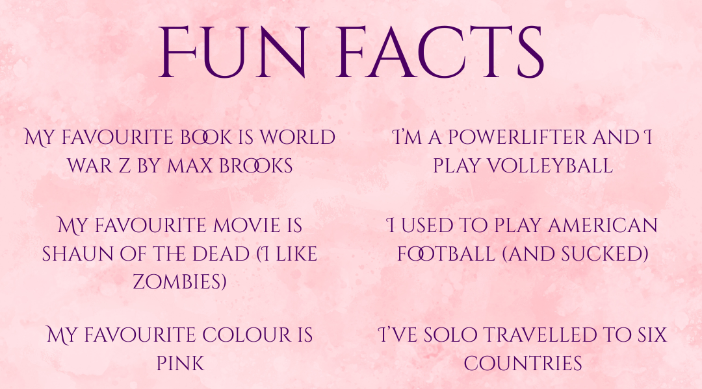

About Me
I've been writing stories since I knew what words were. One of my earliest memories is staying inside during playtime at school to finish writing a story we were assigned. Everyone else wrote a page or two, but I couldn't stop thinking about the details of the world. And I couldn't stop writing.
I still haven't.
In high school, I wrote stories for my friends about teenagers getting superpowers (it's inevitable). I wrote horror stories about monsters, and a haunted computer once.
I consumed booked like nothing else, across all genres, and I still do.
As an adult, I published a collection of short stories on Kindle. Not my best work, but I was so keen to get something out there. I started writing stories in earnest, with the goal of publishing something with polished prose and a solid plot. I started my first novel, about a ragtag group of friends fighting zombies. Hopefully, I'll get around to finishing it.
My concentration has always been up and down, so I focussed on short stories and flash fiction for a while. I got a few pieces published in literary magazines, anthologies, and even a podcast narration. It gave me the boost of confidence I needed to create a novel.
And then I wrote Wrath of the Never Queen. My first finished full-length novel. It was only 30k words at first (it's now around 80k), but I actually finished it. After about 15 drafts, a bunch of beta readers, and a professional edit, I finallly got it to a place where I was happy with putting it into the world.
Sometimes I might put the pen down, or I might switch to shorter pieces, or read manga instead of books, but I always, always come back to writing.
For more about me
Previous Publications Upcoming Events Social Media Newsletter